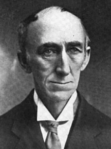
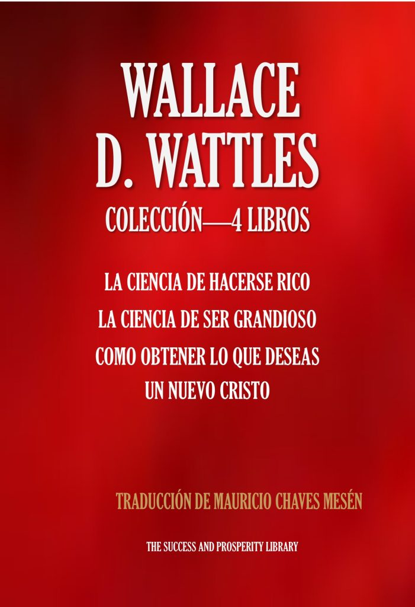

La Ciencia de Hacerse Rico
El clásico sobre pensamiento creativo, oportunidad y acción eficaz.
Ver en Amazon →
Biblioteca de autor
Uno de los grandes arquitectos del Nuevo Pensamiento y de la idea de que una vida próspera puede construirse con propósito, creatividad y acción.
Los tres clásicos reunidos en un volumen

Wallace D. Wattles · ColecciónVer en Amazon →El clásico sobre pensamiento creativo, oportunidad y acción eficaz.
Ver en Amazon →Una filosofía práctica para desplegar el potencial personal y vivir con grandeza.
Ver en Amazon →La dimensión espiritual del pensamiento de Wattles y su visión transformadora.
Ver en Amazon →